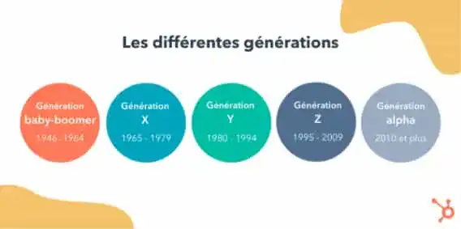

Il existe différente génération de personnes, qui sont nés entre une date précise.
Les baby-boomers, les personnes nés entre 1946 et 1964, pendant la période du baby-boom qui à suivit la 2nd guerre mondiale, où le taux de natalité était crucialement élevé.
La génération X, nés entre 1965 et 1979, qui ont connu la crise pétrolière et la grande vague de chômage.
La génération Y, ou Millenials, né entre 1980 et 1994, cette génération à connu le début d’internet et toutes sorte de technologie.
La génération Z, né entre 1995 et 2009, un bon nombre d’entre nous, elle est née et à grandi avec le numérique, c’est une génération ultra-connecté.
Puis enfin la génération Alpha, ceux qui sont né en 2010 ou après, une génération très jeune, qui grandi avec les grands changements du monde et des écrans partout.
Pour les générations avant l’alpha, les écrans ne sont généralement pas un problème, ayant grandi avec nous en connaissons les avantages et les défauts.
Cela n’empêche pas la dangerosité des écrans et du web, ayant des impacts négatifs sur le physique, psychologique ou même sur la vie sociale.
Les écrans peuvent amener, si on en perd le contrôle, à une sédentarité et au surpoids, un manque de sommeil dont beaucoup d’entre nous souffrons, des douleurs dû à la posture du corps et aux troubles visuelles.
Ils sont également en cause d’une diminution du bienêtre, pouvant entrainer une baisse d’estime de soi (avec l’exemple des réseaux sociaux), une dépendance addictive au même titre que la cigarette, l’alcool ou bien la drogue.

Les impacts sur la vie sociale sont à prévoir aussi, entre isolement, baisse de résultat scolaire, difficulté de sociabilisation et des risques pour la sécurité de soi ou d’autrui.
Toutes les générations souffrent des effets négatifs des écrans, mais le pire est à prévoir pour les futures générations, qui vont grandir avec un internet plus que dangereux et des écrans absolument partout.
Elles vont également grandir avec le futur web 3.0, un monde dont on a pour le moment que très peu d’information.
J’ai écris cet article pour vous sensibiliser à cette cause et prendre soin des gens qui nous entourent, et protéger notre futur génération de tout les méfaits des écrans et de la technologie.